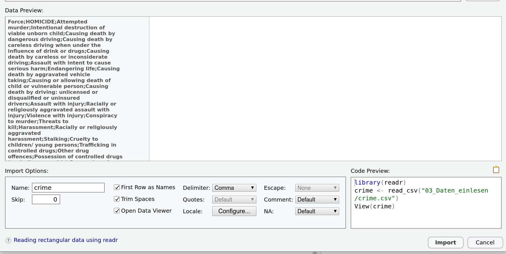

4 Daten einlesen
4.0.1 Einlesen von Daten
Das Rechnen mit den mit R mitgelieferten Datensätzen ist natürlich nur bedingt realitätsnah.
Im durchschnittlichen Anwendungsfall müssen externe Datensätze eingelesen werden.
Dabei sind im tidyverse dafür je nach Quelle folgende Pakete vorgesehen:
Textbasierte Daten(
.txt, .csv, .tsv,...) \(\rightarrow\)readrExcel-Mappen(
.xlsx, .xls) \(\rightarrow\)readxlDaten aus anderen Statistikpaketen(
.sav, .dta,...) \(\rightarrow\)haven
4.0.2 Einlesen von Textdaten
Alle diese drei Pakete sind auch in der RStudio-GUI implementiert:

4.0.3 Problem
Das Einlesen und Aufbereiten wird am folgenden Beispiel exerziert:
Uns interessiert der Zusammenhang von Drogenmissbrauch, Lebenszufriedenheit und Straftaten in Großbritannien. Dafür haben wir die folgenden drei Datensätz zur Verfügung:
'crime.csv'- Eine Textdatei mit nach Polizeibehörde aufgeschlüsselten Straftaten'drugs.xlsx'- Eine Excel-Arbeitsmappe mit nach Region aufgeschlüsselten Zahlen zu Krankenhauseinweisungen mit drogenbedingten Diagnosen'satisfaction.sav'- Ein in SPSS erstellter Datensatz mit nach Region aufgeschlüsselten Ergebnissen einer Bevölkerungsbefragung zur Lebenszufriedenheit
4.0.4 textbasierte Daten
Die GUI ist hier ein guter Start. Wir wollen die Datei 'crime.csv' einlesen. Diese enthält echte Daten über von britischen Polizeibehörden aufgezeichnete Straftaten von der Website der britischen Regierung. Wenn ich dem Pfad im GUI folge, ergibt sich das folgende Bild:

4.0.5 Einlesen von Textdaten
Was ist das Problem?
Das Trennzeichen(Delimiter) ist falsch gesetzt. In den Daten sind die Zellen offensichtlich durch Semikolons getrennt.

4.0.6 Einlesen von Textdateien
Der für das Einlesen nötige Code wird dann von RStudio in die Konsole kopiert und ausgeführt. Um nicht jedes Mal beim Ausführen desselben Skriptes wieder per Hand den Datensatz einlesen zu müssen, kopiert man den Code dann an den Anfang des Skriptes.

4.0.7 Einlesen von Textdateien
Was passiert hier?
crime <- read_delim("data/crime.csv",
Lege in crime das Textfile mit Trennzeichen unter dem angegebenen Pfad ab. Dabei…
";", escape_double = FALSE, trim_ws = TRUE)…erwarte Semikolons als Trennzeichen, erwarte keine doppelten Anführungszeichen und schneide Leerzeichen von den Einträgen ab.
##
## ── Column specification ──────────────────────────
## cols(
## .default = col_double(),
## Force = col_character()
## )
## ℹ Use `spec()` for the full column specifications.
R teilt mit, dass es Kommazahlen als Standard-Zelleninhalt versucht und bei nicht-Funktionieren auf character zurückfällt. Das ist trotz der Farbe keine Fehlermeldung
View(crime)Dann öffne den Datensatz zum Angucken.
4.0.8 Einlesen von Textdateien
Noch zwei wichtige Tricks in dem Einlesetool sind die locale-Schaltfläche und das NA-Menü

Was kann man hier anpassen?
Genau kontrollieren, ob Umlaute, Zellentrennung, fehlende Werte, Dezimaltrennzeichen,… richtig eingestellt waren!
4.0.9 Excel-Arbeitsmappen
Für die Excel-Arbeitsmappen ist die GUI auch der einfachste Weg.
Wie würde man vorgehen um die Datei drugs.xlsx einzulesen?
- Import Dataset \(\rightarrow\) From Excel
- Pfad zum file raussuchen
- Richtiges Sheet aussuchen
- unnötige Zeilen überspringen
- etwaige von leeren Zellen abweichende NA-Codierung anpassen
4.0.10 Excel-Arbeitsmappen
Auch bei Excel-Mappen an das Kopieren des Codes denken!
library(readxl)
drugs <- read_excel("data/drugs.xlsx",
sheet = "Table 2", na = "*", skip = 10)## New names:
## * `` -> ...1
## * `` -> ...2
## * `` -> ...3
## * `` -> ...4Diese Daten sind übrigens auch Originaldaten von der Website des britischen National Health Services
4.0.11 Dateien aus anderer Software
Beispielhaft für SPSS, für Stata etc analog. Die GUI ist wieder ein guter Anfang und hier ziemlich selbsterklärend.
Wie würde man vorgehen um die Datei satisfaction.sav einzulesen?
library(haven)
satisfaction <- read_sav("data/satisfaction.sav")Die Daten kommen diesmal vom britischen Office for National Statistics, wurden aber stark abgewandelt.
4.0.12 Dateien aus SPSS einlesen
Wenn man sich die Daten in der RStudio-Oberfläche anguckt, sieht man, dass die für SPSS typischen Variablendefinitionen konserviert wurden:

4.0.13 Dateien aus SPSS einlesen
haven bietet mit der as_factor-Funktion eine Möglichkeit an, eine dieser Codierung enthaltenden Variablen in einen Faktor umzuwandeln.
Faktoren sind eine Variante um in R kategoriale Variablen anzulegen.
So könnten wir uns zum Beispiel entscheiden, einen neuen, zweiten Datensatz zu erstellen, der die Variablen mit den Verballabels aus SPSS enthält.
Da wir auf alle Spalten dafür dieselbe Funktion anwenden wollen, können wir dafür die mutate_all-Funktion verwenden.
4.0.14 Dateien aus SPSS einlesen
Dabei benutzen wir die im tidyverse beim Batchen von Funktionen verbreitete Funktionsschreibweise:
verbal_satisfaction <- satisfaction %>%
mutate_all(~as_factor(.)) ## Nach der Tilde Funktion für alle Spalten
## Mit dem Punkt wird angegeben, wo die Variablen eingesetzt werden sollenDas Ergebnis sieht in der Oberfläche dann so aus:

Für Tipps zur weitergehenden Bearbeitung von SPSS und Stata-Daten noch hier die sehr gute haven-Vignette zu den nötigen Schritten.
4.0.15 Datenaufbereitung
Datenaufbrereitung kann natürlich denkbar komplex sein, deswegen beschränken wir uns hier auf die folgenden Schritte:
Ausreißer-Behandlung
Umgang mit fehlenden Werten
Recodieren von Werten
4.0.16 Ausreißer-Behandlung
Als ersten Schritt zur Bereinigung der drei Datensätze sollen Ausreißer erkannt und durch fehlende Werte ausgeschlossen werden.
Dafür muss man sich natürlich zuerst überlegen, was das Kriterium dafür sein soll. Wir benutzen hier das Kriterium nach Tukey (1977), also wollen wir gerade die Werte ausschlißen, die mehr als 1.5 Interquartilabstände über oder unter dem 25% bzw dem 75%-Quantil liegen.
Um uns Tipparbeit zu sparen, schreiben wir dafür unsere erste Funktion:
remove_outlier <- function(x){
ifelse(between(x,
quantile(x,.25) - 1.5 * IQR(x),
quantile(x,.75) + 1.5 * IQR(x)),
x,
NA)}4.0.17 Ausreißer-Behandlung
Kombiniert mit einem mutate_if können wir damit alle Ausreißer gegen fehlende Werte austauschen.
mutate_if ist mit mutate_all vergleichbar, nur dass man einen logischen Wert übergeben kann um die umzuwandelnden Spalten auszuwählen.
crime <- crime %>%
mutate_if(.predicate = is.numeric,
~remove_outlier(.))4.0.18 Umgang mit fehlenden Werten
Fehlende Werte werden in R generell mit NA codiert. Um damit umzugehen bietet das tidyverse ein paar Funktionen, wir beschränken uns hier auf zwei.
drop_na zum rigorosen Entfernen von Zeilen mit fehlenden Werten:
drugs %>%
drop_na()## # A tibble: 0 x 7
## # … with 7 variables: ...1 <chr>, ...2 <chr>,
## # ...3 <chr>, ...4 <chr>, `All persons9` <dbl>,
## # Male <dbl>, Female <dbl>…in unserem Fall vielleicht ein bisschen zu rigoros
4.0.19 Umgang mit fehlenden Werten
Die zweite Möglichkeit ist replace_na, eine Funktion die, wie der Name schon sagt, NAs durch festgelegte Werte ersetzen kann. Mit einem mutate_if kombiniert, können wir so alle fehlenden Zahlen im Datensatz durch 0 ersetzen:
drugs %>%
mutate_if(is.numeric,~replace_na(.,0))## # A tibble: 195 x 7
## ...1 ...2 ...3 ...4 `All persons9` Male
## <chr> <chr> <chr> <chr> <dbl> <dbl>
## 1 <NA> <NA> <NA> <NA> 0 0
## 2 E920… <NA> <NA> Engl… 7139 5294
## 3 <NA> <NA> <NA> <NA> 0 0
## 4 U <NA> U Unkn… 244 202
## 5 <NA> <NA> <NA> <NA> 0 0
## # … with 190 more rows, and 1 more variable:
## # Female <dbl>4.0.20 Umgang mit fehlenden Werten
Jetzt können wir noch die fehlenden character umgewandeln:
drugs <- drugs %>%
mutate_if(is.numeric,~replace_na(.,0)) %>%
mutate_if(is.character,~replace_na(.,''))
drugs## # A tibble: 195 x 7
## ...1 ...2 ...3 ...4 `All persons9` Male
## <chr> <chr> <chr> <chr> <dbl> <dbl>
## 1 "" "" "" "" 0 0
## 2 "E92… "" "" "Eng… 7139 5294
## 3 "" "" "" "" 0 0
## 4 "U" "" "U" "Unk… 244 202
## 5 "" "" "" "" 0 0
## # … with 190 more rows, and 1 more variable:
## # Female <dbl>4.0.21 Recodieren von Werten
Das Recodieren von Werten funktioniert einfach über eine mutate-pipeline.
Für Kategoriale Daten bietet das tidyverse die recode-Funktion, hier wollen wir uns aber auf numerische Daten beschränken.
Wie könnte ich die Anxiety-Skala im satisfaction-Datensatz umpolen?
satisfaction <- satisfaction %>%
mutate(Average_Anxious_Yesterday = -1* (Average_Anxious_Yesterday-10))4.0.22 Zusammenführen von Datensätzen
Zu guter Letzt wollen wir die drei Datensätze zu einem Datensatz zusammenfügen.
Dieser soll pro Region
1. die Anzahl aller drogenbezogenen Krankenhausaufenthalte
2. die Anzahl der (versuchten) Mordfälle
3. die mittlere Zufriedenheit über alle Skalen beinhalten
4.0.23 Vorbereitung
Wir fangen damit an, die Datensätze wie gewünscht vorzubereiten.
Aus dem drugs-Datensatz brauchen wir die Regionsbezeichnung, die ONS-Codes und natürlich die Zahl der Einweisungen:
drugs <- drugs %>%
select(...1,...4, `All persons9`)4.0.24 Vorbereitung
Aus dem crime-Datensatz brauchen wir die Bezeichnung der Niederlassung, Anzahl der Morde und die Anzahl der versuchten Morde:
crime <- crime %>%
select(Force,HOMICIDE,`Attempted murder`)4.0.25 Vorbereitung
Aus dem satisfaction-Datensatz brauchen wir den ONS-Code und einen mittleren Zufriedenheitswert
Wie könnte ich das angehen?
satisfaction <- satisfaction %>%
transmute(Code = Code,
Satisfaction = (Average_Satisfaction + Average_Worthwile +
Average_Happy_Yesterday +Average_Anxious_Yesterday)/4)
sum ist keine vektorisierte Funktion! Um eine neue Summenwert pro Zeile zu bilden, sind + und / nötig
4.0.26 Zusammenführen von Datensätzen
Jetzt müssen wir das ganze nur noch zusammenfügen. Dafür benutzen wir die Familien der join-Funktionen
Zuerst fügen wir die Anzahl der Straftaten zu der Anzahl der Krankenhauseinweisungen hinzu. Dabei matchen wir die Regionen über das Regions-Schlüsselwort und behalten nur die Fälle, in denen in beiden Datensätzen ein Schlüsselwort auftaucht:
overall <- drugs %>%
inner_join(crime, by = c('...4' = 'Force'))
overall## # A tibble: 21 x 5
## ...1 ...4 `All persons9` HOMICIDE
## <chr> <chr> <dbl> <dbl>
## 1 E100… Cumb… 72 7
## 2 E100… Lanc… 214 16
## 3 E100… Nort… 44 9
## 4 E100… Derb… 81 4
## 5 E100… Leic… 56 6
## # … with 16 more rows, and 1 more variable:
## # `Attempted murder` <dbl>4.0.27 Zusammenführen von Datensätzen
Dem overall-Datensatz fügen wir jetzt noch die satisfaction hinzu. Hierzu nutzen wir die ONS-Codes. Dabei wollen wir alle Fälle in overall behalten:
overall <- overall %>%
left_join(satisfaction, by = c('...1' = 'Code'))
overall## # A tibble: 21 x 6
## ...1 ...4 `All persons9` HOMICIDE
## <chr> <chr> <dbl> <dbl>
## 1 E100… Cumb… 72 7
## 2 E100… Lanc… 214 16
## 3 E100… Nort… 44 9
## 4 E100… Derb… 81 4
## 5 E100… Leic… 56 6
## # … with 16 more rows, and 2 more variables:
## # `Attempted murder` <dbl>, Satisfaction <dbl>4.0.28 Zusammenführen von Datensätzen
Alles was jetzt noch fehlt, sind schönere Spaltennamen. Dafür benutzen wir entweder rename.
rename erwartet die Angabe jedes Namens, der geändert werden soll als Wert und die neuen Namen als Namen der Argumente:
overall <- overall %>%
rename('ONS_Code' = '...1',
'region' = '...4',
'admissions' = 'All persons9',
'homicide' = 'HOMICIDE')4.0.29 Zusammenführen von Datensätzen
Damit ist unser Datensatz fertig:
overall## # A tibble: 21 x 6
## ONS_Code region admissions homicide
## <chr> <chr> <dbl> <dbl>
## 1 E100000… Cumbr… 72 7
## 2 E100000… Lanca… 214 16
## 3 E100000… North… 44 9
## 4 E100000… Derby… 81 4
## 5 E100000… Leice… 56 6
## # … with 16 more rows, and 2 more variables:
## # `Attempted murder` <dbl>, Satisfaction <dbl>Den speichern wir noch eben als csv-Datei ab.
overall %>% write_csv('data/drugs_crime_UK.csv')